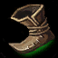

Yasuo's Stats
| Health |
Health Regen |
| 430 (+82 per level) |
5 (+0.9 per level) |
| Attack Damage |
Armor |
| 50 (+3.2 per level) |
19 (+3.4 per level) |
| Attack Speed |
Magic Resist |
| 0.658 (3.2% per level) |
30 (+0 per level) |
| Movement Speed |
| 350 |
The story of a sword is inked in blood.
-Yasuo
Starting Items >> Early Items
|
|
|
|
 |
|
|
| Doran's Blade |
Doran's Shield |
Health Potion |
Warding Totem |
Boots of Speed |
Avarice Blade |
Vampiric Scepter |
Core Items >> Life Steal
 |
 |
 |
 |
 |
|
|
| Statikk Shiv |
Berserker's Greaves |
Infinity Edge |
Last Whisper |
Blade of the R.K. |
Blood Thirster |
Ravenous Hydra |
Defensive Items
 |
 |
|
|
|
| Mercury's Treads |
Spirit Visage |
Randuin's Omen |
Banshee's Veil |
Guardian Angel |
Example Final Build
|
|
|
|
|
|
| Berserker's Greaves |
Blade of the Ruined King |
Statikk Shiv |
Infinity Edge |
Last Whisper |
Guardian Angel |
Champions to avoid laning against
- Master Yi
- Riven
- Akali
- Ryze